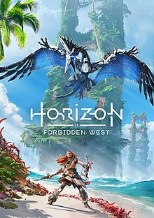
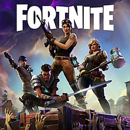
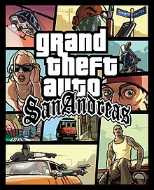

My Favorite Games
1- Red Dead Redemptions 2

game discriptions: Red Dead Redemption 2[a] is a 2018 action-adventure game developed and published by Rockstar Games.
The game is the third entry in the Red Dead series and a prequel to the 2010 game Red Dead Redemption.
game rank: ⭐️ 9.5/10
2- GTA V

Grand Theft Auto V is a 2013 action-adventure game developed by Rockstar North and published by Rockstar Games. It is the seventh main entry in the Grand Theft Auto series, following 2008's Grand Theft Auto IV, and the fifteenth instalment overall.
game rank: ⭐️ 9.6/10
3- The Last Of Us

he Last of Us is a 2013 action-adventure game developed by Naughty Dog and published by Sony Computer Entertainment. Players control Joel, a smuggler tasked with escorting a teenage girl, Ellie, across a post-apocalyptic United States. The Last of Us is played from a third-person perspective.
game rank: ⭐️ 9/10
4- Horizon Zero Down

Horizon Zero Dawn is a 2017 action role-playing game developed by Guerrilla Games and published by Sony Interactive Entertainment. The game was released for PlayStation 4 in 2017 and Windows in 2020.
Horizon Zero Dawn is the first game of the Horizon video game series. The plot follows Aloy, a young hunter in a world overrun by machines, who sets out to uncover her past.
game rank: ⭐️ 8.5/10
5- God Of War Ragnarok

God of War Ragnarök is an action-adventure game developed by Santa Monica Studio and published by Sony Interactive Entertainment. It was released worldwide on November 9, 2022, for both the PlayStation 4 and PlayStation 5, marking the first cross-gen release in the God of War series. It is the ninth installment in the series, the ninth chronologically, and the sequel to 2018's God of War.
game rank: ⭐️ 9.7/10
6- Call Of Duty Modern Warfare 1

Call of Duty 4: Modern Warfare is a 2007 first-person shooter video game developed by Infinity Ward and published by Activision. It is the fourth main installment in the Call of Duty series. The game breaks away from the World War II setting of previous entries and is instead set in modern times.
game rank: ⭐️ 8.4/10
7- fortnite

Fortnite is an online video game developed by Epic Games and released in 2017. It is available in three distinct game mode versions that otherwise share the same general gameplay and game engine: Fortnite Battle Royale, a free-to-play battle royale game in which up to 100 players fight to be the last person standing; Fortnite: Save the World, a cooperative hybrid tower defense-shooter and survival game in which up to four players fight off zombie-like creatures and defend objects with traps and fortifications they can build; and Fortnite Creative, in which players are given complete freedom to create worlds and battle arenas.
game rank: ⭐️ 8/10
8- Assassin's Creed Odysey

Assassin's Creed Odyssey is a 2018 action role-playing video game developed by Ubisoft Quebec and published by Ubisoft. It is the eleventh major installment in the Assassin's Creed series and the successor to 2017's Assassin's Creed Origins. Like its predecessor, the game features a large open world and adopts many elements from the role-playing genre, putting more emphasis on combat and exploration than stealth. Naval combat from previous titles in the series also plays a prominent role in Odyssey.
game rank: ⭐️ 8.1/10
9- Assassin's Creed Valhala

Assassin's Creed Valhalla is a 2020 action role-playing video game developed by Ubisoft Montreal and published by Ubisoft. It is the twelfth major installment in the Assassin's Creed series, and the successor to 2018's Assassin's Creed Odyssey.
game rank: ⭐️ 9.1/10
10- GTA San Andreas

Grand Theft Auto: San Andreas is a 2004 action-adventure game developed by Rockstar North and published by Rockstar Games. It is the fifth main entry in the Grand Theft Auto series, following 2002's Grand Theft Auto: Vice City, and the seventh installment overall. It was released in October 2004 for the PlayStation 2, in June 2005 for Microsoft Windows and Xbox, and in November 2010 for Mac OS X.
game rank: ⭐️ 9.9/10